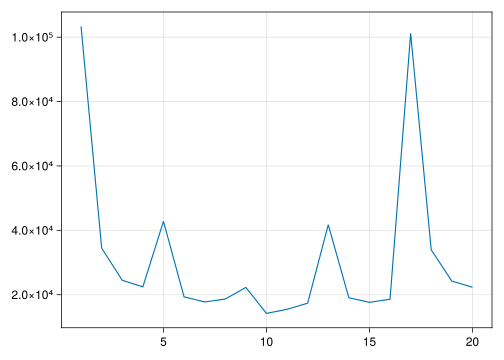
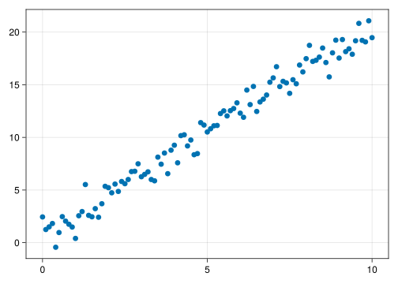

using Distributions
using CairoMakie
using Random
using Optim
using GLM
using DataFramesDisclaimer! The whole point of these “learning out loud†blog posts is to give myself a venue in which to practice/learn various statistics and programming concepts. I’m deciding to post these on my website both to normalize this notion of learning in public and also to invite people who know more than me to provide feedback. If I get something wrong, I’d love for you to tell me!
Maury Povich as a metaphor for maximum likelihood estimation
So this obviously isn’t 100% mathematically rigorous, but based on my understanding of maximum likelihood estimation (MLE), I think it’s kind of like the Maury Povich show…
Back when I was in high school, some of my friends and I used to eat lunch in our track coach’s classroom and watch the Maury Povich show. For those of you that haven’t every watched Maury, it’s an…interesting study of human behavior…and worth checking out. But basically it’s like Jerry Springer or any of these other daytime drama-fests, covering everything from infidelity to obesity to insane behavior and everything in between. But Maury’s specialty was paternity tests.
Although the details of the paternity test episodes differed slightly, a common pattern was that a pregnant woman along with multiple men would come on the show, and each of the men would take a paternity test. Maury would ask the men and the women to describe how confident they were in the results of the test, and the men would usually offer up something like:
“I am a thousand percent sure I am not the father.”
Which would then elicit the next man to say:
“Well I am one million percent sure I’m not the father!”
Which would in turn elicit animated reactions from the audience, the mother, and the other potential father(s) on the stage.
So how’s this like maximum likelihood estimation?
So my understanding of the logic of maximum likelihood estimation (MLE) is that, given a set of data, we can estimate the likelihood of a distribution parameterized by a given set of parameters. Imagine we have a bunch of measures of adult heights, and we assume that height is normally distributed. We know that a normal distribution is defined by its mean and its standard deviation. And so using our set of data, we can estimate the likelihood of any combination of mean and standard deviation (i.e. any set of parameters) given this data. And the parameters with the maximum likelihood are the “best†given our set of data. We’ll walk through this with examples later.
What matters here though is that the actual number describing the likelihood (or the log-likelihood, more likely) doesn’t really matter. It’s not arbitrary, but it’ll differ depending upon how many observations are in your dataset, the distribution you’re using, etc. The values of the (log)likelihood relative to one another are what matters. And in this respect I’m reminded of Maury’s paternity tests.
It doesn’t matter if a guest on the show says he’s 100% sure the baby isn’t his. If the guy next to him says he’s 110% sure the baby’s not his, then he’s more certain than the first guy. Likewise, if the first guy says he’s one million percent sure the baby isn’t his, he still “loses†if the guy next to him says he’s 2 million percent sure. The actual number doesn’t matter – what matters is the estimate relative to the other estimates.
Some Examples
I’m not 100% sure the Maury analogy actually holds up, but whatever, let’s work through some examples
First we’ll load some necessary packages.
Case 1: Fitting a Normal Distribution
This is the simplest case. First, we’re going to generate some sample data, s, from a normal distribution with \(\mu = 0\) and \(\sigma = 1\)
Random.seed!(0408)
s = rand(Normal(), 10000)10000-element Vector{Float64}:
-1.4055556573814212
0.8813161144909877
0.4695240597638853
1.0596565592604608
-1.1909245261358548
-1.4819187811057175
-0.40408041211016915
-0.37805385034816524
-1.5132047920081557
2.2528479354589197
-1.6595728371412546
1.321172026499611
-1.5741912720732054
⋮
-0.6706076665047674
1.313413766916552
-0.5776340358208154
2.2968511578121857
0.6020915294889897
0.19216658269979192
0.8936776607551574
-0.5898756308872724
0.2424739897566387
0.7926169568329148
-0.46603730352631795
-0.6572491362891565Then we’ll generate a bunch of normal distributions with various means and standard deviations
μs = collect(-2.0:2.0)
σs = [0.5:0.5:2;]
ds = []
for i = μs, j = σs
d = Normal(i, j)
push!(ds, d)
endSo our task now is going to be to determine the likelihood of each distribution (defined with a given set a parameters) given our data, s, that we’ve drawn from a normal distribution with \(\mu = 0\) and \(\sigma = 1\)
To do this, we use the probability density function (pdf) of our normal distribution to determine the likelihood of the parameters for any given observation. Fortunately, Julia (and other languages) have tools that can help us do this without having to write out the entire equation by hand. That said, here’s the equation – even though I’m not going to call it directly, it’s probably useful to see it.
\[f(x) = \frac{1}{\sqrt{2\pi\sigma}} \exp[-\frac{(x - \mu)^2}{2\sigma^2}]\]
Let’s take a look at the first observation and the first distribution we defined:
The first value in our sample is:
s[1]-1.4055556573814212And the first distribution we’ll look at is
ds[1]Normal{Float64}(μ=-2.0, σ=0.5)And if we look at the pdf of this, we get:
pdf(ds[1], s[1])0.39356088133821826I’m not a statistician (hence these learning posts), but my understanding of this is that it generally represents the “fit†of the distribution (and its parameters) to the given sample/data point. These values will be bound between 0 and 1, since they’re likelihoods, with higher values indicating better fit/higher likelihood.
The next step is to convert this to a log scale, since logging allows us to sum things rather than multiply them (which we’re gonna do soon).
logpdf(ds[1], s[1])
#same as log(pdf(ds[1], s[]1))-0.9325195055871961So this gives us the log likelihood of a given data point. But now we need to do this for all of the data points in our sample to determine the “fit”/likelihood of the distribution to our whole sample.
sum(logpdf.(ds[1], s))-103363.07786213113Apparently Distributions.jl gives us a helper for this via loglikelihood, so the above is the same as:
loglikelihood(ds[1], s)-103363.07786213112So this gives us the (log)likelihood of a distribution (normal, in this case, defined by parameters \(\mu\) and \(\sigma\)) given our sample. That is, the relatively plausibility of the parameters given our data. The goal then is to pick the best distribution/parameters, which we can do by maximizing the likelihood. In Maury terms, we want to find guy who’s most sure that the baby isn’t his.
Or, apparently, it’s more common to minimize the negative loglikelihood, which is the same thing (and called logloss, I guess).
So let’s do this for all of the distributions we specified earlier
lls = []
for i in ds
res = -loglikelihood(i, s)
push!(lls, res)
end
lls = Float64.(lls)20-element Vector{Float64}:
103363.07786213112
34465.6764159677
24477.94356153769
22439.92990862643
42816.83247490566
19329.115069161333
17750.58296295708
18655.789571924823
22270.587087680186
14192.553722354956
15467.666808820915
17371.649235223234
41724.3417004547
19055.992375548587
17629.195099129196
18587.50889852165
101178.09631322921
33919.43102874222
24235.16783388192
22303.36856182006And then we can plot the loglikelihoods we get:
ind = collect(1.0:length(ds))
lines(ind, lls)
Notice that our negative log likelihood is minimized in the 10th distribution, so let’s take a look at what that is
ds[10]Normal{Float64}(μ=0.0, σ=1.0)This makes sense! This was the distribution that we drew our samples from!
If we want to do this without looking at a plot, we can apparently do this:
#get the index of the minimum value in lls
min_ll = findall(lls .== minimum(lls))
#get the distribution at this index
ds[min_ll]1-element Vector{Any}:
Normal{Float64}(μ=0.0, σ=1.0)So this tells us that – of the distributions we tested! – the most likely distribution given our data is a normal distribution with mean of 0 and standard deviation of 1. This doesn’t necessarily mean that this \(\mu = 0\) and \(\sigma = 1\) are the optimal parameters. There could be better parameters that we didn’t test, and so in the future we’d want to probably use some sort of optimizing functions that can do all of the math for us.
Case 2: Simple Linear Regression
So now let’s move on a bit and try a simple linear regression. First we’ll just generate some fake data and a “ground truth†function
#generate some x values
x = collect(0:.1:10)
#generate error
ϵ = rand(Normal(0, 1), length(x))
#define a function relating x to y
f(x) = 0.5 + 2*x
#generate y as f(x) plus error
y = f.(x) .+ ϵ101-element Vector{Float64}:
2.4461255238293758
1.2496723713219855
1.5014319678963934
1.8228982131749496
-0.4320716243406362
0.9628100854937409
2.475384749019799
2.047025196204242
1.7487030877341891
1.4865883008076408
0.405749179591091
2.5585877608457355
2.956751811280712
⋮
19.232878652117428
17.53450559237765
19.290332010598092
18.144129060042054
18.413568163778812
17.89449730367819
19.175282300038607
20.826640516579364
19.21519350783753
19.070233221768582
21.072296712369102
19.469128284822276And then we can plot the x and y values we just created:
CairoMakie.scatter(x, y)
Another way to think about the above is that we expect a linear relationship between x and y in the form of
\(y = \alpha + \beta x + \epsilon\)
We need to estimate alpha and beta in a way that optimally fits this line, and we can do this with maximum likelihood. We can take advantage of the fact that linear regression assumes that residuals are normally distributed with an expected value (mean) of 0, since this will provide as with a distribution we can try to parameterize optimally. Since the residuals are dependent upon the predicted values of y, and since the predicted values of y are dependent on the intercept (\(\alpha\)) and the coefficient (\(\beta\)), this will give us a way to estimate the terms in the regression line.
\(\sigma\) is not super important to us, but we still need to estimate it. We can estimate the loglikelihood of a given set of parameters using the function below.
function max_ll_reg(x, y, params)
α = params[1]
β = params[2]
σ = params[3]
ŷ = α .+ x.*β
resids = y .- ŷ
d = Normal(0, σ)
ll = -loglikelihood(d, resids)
return ll
endmax_ll_reg (generic function with 1 method)And let’s see how this works by passing in some generic values – .5 as the intercept, 2 as the beta coefficient, and 1 as the error variance.
yy = max_ll_reg(x, y, [.5, 2, 1])137.00423917573127The next step then is to optimize this. We pass some starting values and our max_ll_reg function into an optimizer, tell it to find the optimal values for the parameters (\(\alpha\), \(\beta\), and \(\sigma\)), and then the magical optimizing algorithm written by people much smarter than me will give us our coefficients.
res = optimize(params -> max_ll_reg(x, y, params), [0.0, 1.0, 1.0]) * Status: success
* Candidate solution
Final objective value: 1.361561e+02
* Found with
Algorithm: Nelder-Mead
* Convergence measures
√(Σ(yᵢ-ȳ)²)/n ≤ 1.0e-08
* Work counters
Seconds run: 0 (vs limit Inf)
Iterations: 130
f(x) calls: 234And then this will give us the maximum likelihood solution for our regression equation.
Optim.minimizer(res)3-element Vector{Float64}:
0.6262632240571052
1.9908770881500015
0.9315933450872507We can check this by fitting the model with the GLM package
data = DataFrame(X = x, Y = y)
ols_res = lm(@formula(Y ~ X), data)StatsModels.TableRegressionModel{LinearModel{GLM.LmResp{Vector{Float64}}, GLM.DensePredChol{Float64, LinearAlgebra.CholeskyPivoted{Float64, Matrix{Float64}}}}, Matrix{Float64}}
Y ~ 1 + X
Coefficients:
────────────────────────────────────────────────────────────────────────
Coef. Std. Error t Pr(>|t|) Lower 95% Upper 95%
────────────────────────────────────────────────────────────────────────
(Intercept) 0.626272 0.185875 3.37 0.0011 0.257455 0.995089
X 1.99088 0.0321144 61.99 <1e-80 1.92715 2.0546
────────────────────────────────────────────────────────────────────────et voila, we get the same \(\alpha\) and \(\beta\)! The coefficients aren’t exactly the same as the ones we specified when generating the data, but that’s because of the error we introduced.
It’s maybe also worth nothing that Julia lets us solve the equation via the \ operator, which apparently provides a shorthand for solving systems of linear equations:
#we have to include a column of 1s in the matrix to get the intercept
xmat = hcat(ones(length(x)), x)
xmat \ y2-element Vector{Float64}:
0.6262717121103298
1.9908750493937837Case 3: Multiple Regression
And I think we can extend the same logic above to multiple regression. The first step is to generate some data:
#make a 100x3 matrix of random numbers
tmp = randn(100, 3)
#append a leading column of 1s (so we can get the intercept)
𝐗 = hcat(ones(100), tmp)
#provide 'ground truth' coefficients
𝚩 = [.5, 1, 2, 3]
#define a function to multiply X by B
f₂(X) = X*𝚩
#create some error
ϵ = rand(Normal(0, .5), size(𝐗)[1])
#make outcome values that comprise our generating function plus error
𝐘 = f₂(𝐗) + ϵ100-element Vector{Float64}:
1.9539840955199055
2.2807060973619135
2.406665555383834
-0.014731760693462048
0.6002032048684441
-3.531148702629271
3.194699866301238
-1.17858666703318
-0.31117832513371646
1.5595030004201824
7.314823243199307
-2.1182414214687673
-3.502694667516171
⋮
9.205296659574488
4.233455153011074
5.620823053237128
-2.4088759447640156
5.127431971734125
1.0043279157869205
3.6343775497324184
2.611885689812401
0.11077494956658729
3.06142672043232
1.961141975667116
-0.013605916161866072Then we can define another function to return the maximum likelihood. This is the same as the simple regression function above, except it’s generalized to allow for more than 1 slope coefficient. Julia provides some neat functionality via the begin and end keywords that let us access the first and last elements of a vector, and we can even do things like end-1 to get the second-to-last element, which is pretty nifty.
function max_ll_mreg(x, y, params)
𝚩 = params[begin:end-1]
σ = params[end]
yÌ‚ = x*𝚩
resids = y .- ŷ
d = Normal(0, σ)
ll = -loglikelihood(d, resids)
return ll
endmax_ll_mreg (generic function with 1 method)Then we can do the same thing as before – provide some starting parameters (coefficients), and tell our super-smart optimizer function to give us the parameters that maximize the likelihood.
start_params = [.4, .5, 1.5, 4.0, 1.0]
mreg_res = optimize(params -> max_ll_mreg(𝐗, 𝐘, params), start_params) * Status: success
* Candidate solution
Final objective value: 6.860916e+01
* Found with
Algorithm: Nelder-Mead
* Convergence measures
√(Σ(yᵢ-ȳ)²)/n ≤ 1.0e-08
* Work counters
Seconds run: 0 (vs limit Inf)
Iterations: 221
f(x) calls: 392And then we can show the results:
Optim.minimizer(mreg_res)5-element Vector{Float64}:
0.42976727494283473
1.0367345683471323
1.8923643524058003
3.0304421915621127
0.4805357922701782And we can check that these are returning the correct values
𝐗 \ 𝐘4-element Vector{Float64}:
0.42976708591782187
1.0367343909692166
1.8923640529063954
3.0304412982361364Alternatively, we could have written out the joint pdf for the normal distribution by hand, like below.
First we can define this function:
function alt_mle_mlr(x, y, params)
𝚩 = params[begin:end-1]
σ = params[end]
yÌ‚ = x*𝚩
n = length(ŷ)
ll = -n/2*log(2π) - n/2* log(σ^2) - (sum((y .- ŷ).^2) / (2σ^2))
ll = -ll
return ll
endalt_mle_mlr (generic function with 1 method)Then see what the loglikelihood is given our starting parameters:
alt_mle_mlr(𝐗, 𝐘, start_params)174.11351826768353Then optimize the function:
mreg_res2 = optimize(params -> alt_mle_mlr(𝐗, 𝐘, params), start_params) * Status: success
* Candidate solution
Final objective value: 6.860916e+01
* Found with
Algorithm: Nelder-Mead
* Convergence measures
√(Σ(yᵢ-ȳ)²)/n ≤ 1.0e-08
* Work counters
Seconds run: 0 (vs limit Inf)
Iterations: 221
f(x) calls: 392And check the results:
Optim.minimizer(mreg_res2)5-element Vector{Float64}:
0.42976727494283473
1.0367345683471323
1.8923643524058003
3.0304421915621127
0.4805357922701782And there we go. Hopefully that was helpful for some others. I’ll probably do some more of these “learning out loud†posts as I dig into some more math, Julia, or other topics.
Reuse
Citation
BibTeX citation:
@online{ekholm2022,
author = {Ekholm, Eric and , EE},
title = {MLE {Learning} {Out} {Loud}},
date = {2022-08-31},
url = {https://www.ericekholm.com/posts/mle-learning-julia},
langid = {en}
}
For attribution, please cite this work as:
Ekholm, Eric, and EE. 2022. “MLE Learning Out Loud.†August
31, 2022. https://www.ericekholm.com/posts/mle-learning-julia.